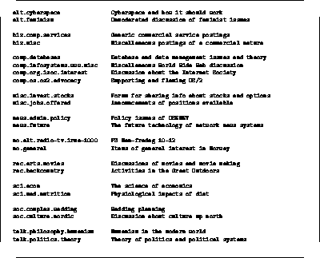
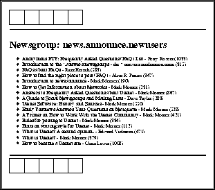

News er et verdensomspennende og helt åpent forum for kommunikasjon mellom mennesker. Det i seg selv er en ganske unik ting og kan brukes til mye. Under kriser som f.eks. Gulfkrigen og opptøyene i Kina, ble News brukt som et medium til raskt å bringe informasjon direkte fra begivenhetenes kjerne ut til folk. Denne informasjonen kom fra den jevne mann i gata, og var selvsagt kjemisk fri for sensur og redaksjonell påvirkning fra journalister etc.
News kan brukes til hygge og adspredelse såvel som til nytte, og dette er avspeilet gjennom det enorme utvalget grupper som eksisterer. Figur 3 viser et utvalg grupper fra de store News hierarkiene.


Konsentrerer vi oss om nytten, er det vel særlig to ting News er velegnet til:
De tekniske gruppene leses av folk fra hele verden, og felles for de fleste av disse personene er at de er interessert i emnet gruppen omhandler, og mange av dem har derfor inngående kjennskap til ting. Sender man inn et spørsmål til en slik gruppe, vil man som regel få svar i løpet av meget kort tid. Svaret kan man få sendt som vanlig elektronisk post, eller i form av et innlegg i gruppen slik at også andre kan lese svaret.
Den raske responsen vil kunne være meget verdifull, på samme måte som med bruk av elektronisk post.
I en del av gruppene pågår det ikke diskusjoner, det postes kun informative meldinger, omtrent som på en oppslagstavle. Eksempler på slike grupper er f.eks. news.announce.conferences og comp.internet.net-happenings og comp.infosystems.announce.
Atter andre grupper, eller evt. hierarkier av grupper, består av seksjoner omtrent som i en avis, og en del av disse har også sitt opphav i en avis. F.eks. driver firmaet Clarinet en elektronisk nyhetstjeneste man kan abonnere på via Internettet og News, og NTB i Norge driver en liknende tjeneste, men den er foreløpig bare tilgjengelig for FoU brukere og forvaltningen.